GAN¶
About GAN
- cycleGAN
- starGAN
- C-RNN-GAN

文生图模型

交互式的demo
text2image的模型 或者叫 caption2image：可以怎么构造这样一个模型呢？
前提：算力够、数据够，有大量的图像文本对
文本输入到bert中，提取文本特征，通过Transformer模型生成图像patch，然后把patch拼起来构成一张图片，假设采用 这样的模型，LOSS该怎么设计？
最常用的loss，比如L1 loss，L2 loss，归一化到0~1之间，将预测的图像像素点值跟真实的target像素点值作差，用差的绝对值 或者平方作为loss
另外一种用法：把生成的照片用在另外的下游任务中，比如识别任务中，判断照片是生成的照片还是识别的照片，这种网络的思想就是 GAN 生成对抗网络 （topic）

DALLE的用的是 diffusion process，Diffusion process 主要用随机噪声生成目标分布，数学公式比较复杂，速度有待提升，生成图片的质量跟迭代次数有关，迭代步骤越大，生成质量越好。

GAN思想：生成的照片放到识别网络中，判断照片来自真实的还是生成的
论文导读 & 代码实现
2024年的论文
引用量目前4万多、残差网络引用量10万多、一半的关系，因为GAN网络主要在生成网络中使用，对于识别分类任务，GAN不太适用，而残差网络的应用范围更广泛
摘要¶
We propose a new framework for estimating generative models via an adversarial process, in which we simultaneously train two models:
提出了新的模型，通过对抗过程估计生成模型
a generative model G that captures the data distribution,
生成模型G捕捉数据分布
and a discriminative model D that estimates the probability that a sample came from the training data rather than G.
判别模型D估计样本来自来自训练数据还是生成器G
The training procedure for G is to maximize the probability of D making a mistake.
This framework corresponds to a minimax two-player game.
该框架对应极大极小两人博弈
In the space of arbitrary functions G and D, a unique solution exists, with G recovering the training data distribution and D equal to \(\frac{1}{2}\) everywhere.
在任意函数G和D的空间中，存在唯一解，G恢复训练数据分布，D处处等于 \(\frac{1}{2}\)
D此时无法区分数据是来自真实的数据还是真实的数据
In the case where G and D are defined by multilayer perceptrons, the entire system can be trained with backpropagation.
G和D都是由全连接层构成的
There is no need for any Markov chains or unrolled approximate inference networks during either training or generation of samples.
Experiments demonstrate the potential of the framework through qualitative and quantitative evaluation of the generated samples.
Intro¶
一个比喻：（原文第二段）
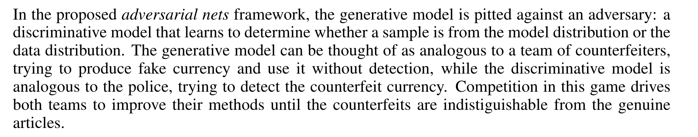
对抗网络是一个框架，具体地方法是可以自己填充的
模型方法 Adversarial nets¶

符号说明：
生成器的分布： \(p_g\) 生成器学习 \(x\) 的分布
原始数据：\(x\)
输入噪声变量：\(p_z(z)\)
数据空间的映射：\(G(z;\theta_g)\)
模型开始的先验分布是 \(p_z(z)\),通过 \(G(z;\theta_g)\)，学习到 \(p_g\)， \(p_g\) 表示了 \(x\) 的分布
\(G(z;\theta_g)\) 变量是 \(z\)，参数是 \(\theta_g\)
输入噪声变量 \(z\)，\(z\)来自\(p_z\)
G 是由 参数为 \(\theta_g\) 的多层感知机表示的可微函数
多层感知器 \(D(x;\theta_d)\) 输出一个标量；表示一个概率，判断数据来自生成器还是判别器
D 的输入是 \(x\)，参数是 \(\theta_d\)，输出是一个标量，反映数据...
训练 D 最大化 给训练样本和来自 \(G\) 的样本分配正确标签的概率
D的目的是能够正确分类 训练样本 和 G的样本概率
训练 G 最小化 \(log(1-D(G(z)))\)
\(log\)单调递增，括号里面 \(1-D(G(z))\) 最小，所以 \(D(G(z))\) 最大
\(D(G(z))\) 最大表示 生成器所生成的样本 输入到判别器的时候，判别器将它判别成 \(1\)
也就是说 生成器生成的样本，判别器将它判别成来自真实样本，等于1，这时候生成器的目标就已经达成了，从G生成的数据，判别器认为是真实的数据

价值函数 \(V(G,D)\)
解释价值函数:
\(\min_G \max_G V(D,G)\)
min是对G而言，\(max\)对\(D\)而言
① 对\(D\)而言 我们让\(V\)达到最大，要让\(V\)达到最大，也就是 \(logD(x)\) 达到最大，同时\(log 1-D(G(z))\) 达到最大，因此对于判别器而言，我们希望判别器 能够把来自于训练集的样本 把它分类成真实的，来自生成器的样本 分类成假的，这个对于判别器的训练目标
② 生成器的训练目标，minG，也就是说 对于生成器而言，后面两个达到最小，由于第一项\(logD(x)\)与g无关，所以第一项不用看，在训练集中 第一项 相当于一个常数 不重要。主要看第二项，第二项达到最小的话，也就是说 希望\(DG(z)\)达到最大，也就是说 训练G的目标 就是希望 \(D(G(z))\) 达到最大，也就是说 从生成器生成出来的样本 送入到判别器中 我们希望判别器这时候 给出的分类结果 分类成 真实的样本；当达到这样的结果时，说明G训练的结果是很好的
\(\mathbb{E}_{{x \sim p_{data}(x)}}\) x服从p data(x)，也就是训练集，x也就是训练集中的样本
\(\mathbb{E}_{{x \sim p_{data}(x)}}[logD(x)]\) 训练集中的样本送入到判别器中，也就是概率取一个\(log\)，也就是对数似然
\(\mathbb{E}_{{z \sim p_{z}(z)}}\) 第二部分\(z\)服从 \(p_z(z)\)，\(z\)就是初始的随机的噪声，\(z\)送入到生成器之中 得到\(G(z)\)
\(\mathbb{E}_{{x \sim p_{z}(z)}}[log(1-D(G(z)))]\) \(G(z)\)就是生成器的输出，\(G(z)\)输入到\(D\)之中得到一个概率，然后把1-概率，\(1-DG\)，就是表示 判别器把 \(G(z)\) 分类成 假样本的概率
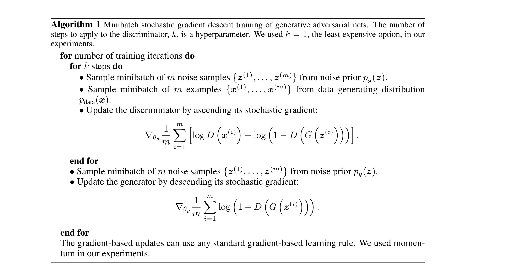
（1）生成对抗网络基于mini batch的随机梯度下降的算法；超参数k；
（2）k？一般文章而言，可以先训练k步的判别器，然后再训练一步生成器，这里取k=1，表示每训练一步判别器，就训练一步生成器，然后再训练一步判别器，再训练一步生成器，交替进行，k是一个超参数，一般来说k=1；也有一些任务，先训练生成器，训练一段时间，再开始交替训练生成器和判别器
（3）看算法的迭代流程，两个for训练；第一个for循环，循环epoch，第二个for循环，循环dataset 或者 dataloader 进行遍历

（4）首先第一步，第一个for循环，先训练k步的判别器， k可以取1，在训练判别器时，首先从噪声分布中，随机采样m个样本，构成一个minibatch，m个样本分别构成z1到zm，从先验分布 \(p_g(z)\) 采样而来，\(p_g(z)\)可以是一个正态分布；这就是第一步先采样输入

（5）第二步，采样真实的数据分布，采样m个样本，从训练集中采样m个样本

（6）基于梯度上升 ascending 公式，更新判别器 ；目标函数是 \(logD+log(1-DG)\)
对于判别器而言，判别的标量有两个，第一个以x作为输入，从训练集中拿出的样本，送到判别器中，得到一个概率值，这时的概率值叫做 \(D(x)\)，第二个从生成器中，拿到输出，叫做\(G(z)\)，\(G(z)\)送入到\(D\)中，得到另外一个判别的概率，\(1-判别概率\)，进行一个 \(log\) 运算，得到第二项，外面的求和是对整个minibatch，每个样本都这样做，再除以\(m\)，在样本维度取一个平均值，以这个作为 \(target\)，此时的 \(\nabla\) 是作用到 \(\theta_D\) 的
也就是说 对于这个目标函数 只会对 判别器的参数 求梯度，求完梯度以后，再用梯度上升算法，来更新判别器的参数，以上是第一步更新判别器
如果 \(k>1\)，需要不断的循环，连续的更新判别器，更新k步，更新完判别器以后，更新生成器部分：
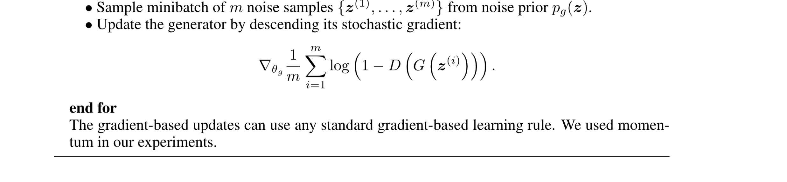
（1）生成器部分，第一步，同样取m个噪声样本，构成一个minibatch，同样的从一个先验分布中取，强调一点：

（2）第二步，采用梯度下降算法(descending)，更新生成器，此时的目标函数，也就是最小化函数是 \(log(1-DG)\) ，只需要把生成器生成的 \(G\)，送入到判别器之中，得到\(D\)，\(DG\)就是判别器预测的概率，\(1-概率\)取log，得到 \(log(1-DG)\)，然后对每个样本的损失求和，再除以m，取平均，这是梯度只对生成器的参数计算，在基于梯度下降算法更新 生成器的参数，这时不需要更新判别器的参数
上面的式子，只更新判别器的参数，不需要更新生成器的参数
下面的式子，只更新生成器的参数，不需要更新判别器的参数
以上是GNA的一个step，不断的重复，交替更新，直到\(D(x)\)和\(D(G)\)都是0.5，此时判别器已经无法再区分 数据是来自真实数据 还是生成器生成的假样本
原文4.1证明，这样的损失函数是否能让 G和D 同时找到最优的值 或者 最优的结构？
4.1 证明¶

考虑任意给定的生成器G，最优的判别器D是怎么样的
定理1，G固定，最优的判别器D：

*号 表示最优
D_G，表示 G 是固定的，D是变化的
x服从真实data的概率、x服从生成器g的概率
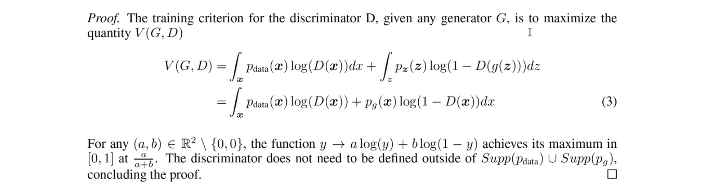
证明，对于任意生成G，判别器D的训练标准，就是要最大化价值函数V，价值函数之前用期望值表示的，期望可以写成积分的形式，第一个积分 \(p_{data}(x)D(x)\)，对\(x\)进行积分，第二个积分\(p_zlog(1-Dg)\)，对\(z\)进行积分，
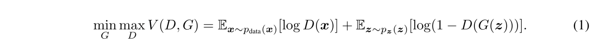
将第二个积分，换一下积分符号 z → x，然后合并
（有个问题，为什么 \(\int_z p_z(z) (1-D(g(z)))dz\) → $\int_x p_x(x) (1-D(g(x)))dx $ 这里 \(p_x(x)\)变成 \(p_g(x)\)）
当写成这样以后：

对于这样一个函数，对于任意a，b，属于实数，并且 a,b 不等于0，此时关于 y 的函数，\(alogy+blog(1-y)\) 这里 \(a=p_{data}(x)\) 、 \(b=p_g(x)\) 在 \(\frac{a}{a+b}\) 达到最大值，也就是 \(\frac{p_{data}(x)}{p_{data}(x)+p_g(x)}\) 达到最大值

注意 训练 D的目标 可以解释成 在最大化 P(Y=y|x)的对数似然
- \(x\)就是给定一个输入，输入到判别器中的样本
- \(P(Y=y)\) \(Y\)表示一个概率，表示\(x\) 来自生成器的概率，还是\(data\)（真实数据）的概率
公式1 可以重新写成 \(C(G)\)，
\(C(G) = \max_{D}V(G,D)\)
就是把价值函数 重新写成 生成器的函数，也就是 \(V(G,D)\)在找到 最优的 D 取最大值
重点解释第二行，把 \(G(z)\)换成\(x\)，\(z \sim p_z\) ，也就是 \(x \sim p_g\)
也就是 \(p_z\) 可以用 \(x\) 的分布表示
然后我们把找到的 \(D^*_G(x)\) 代入，得到第三行的价值函数

- 上面我看明白了
继续看，后面还有证明

开始：

训练标准\(C\) 的全局最小值，仅仅在 \(p_g = p_{data}\) 时，达到，并且最小值 是 \(-log4\)
公式4 已经得到 \(C(G)\) 的表达式
接下来 我们就研究 C(G)的最小值，在什么情况下取到，并且最小值是什么。看证明：
（1）假设 \(p_g=p_{data}\)时，也就是生成分布和真实分布一模一样时，此时最优的 D刚好等于 \(\frac{1}{2}\)
看原文的公式(2)

（2）因此，我们把公式(4)最后得到的式子，全部换成 \(\frac{1}{2}\)
此时：

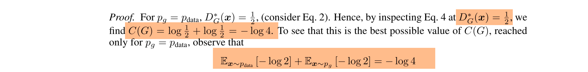
也就是说，当我们假设 \(p_g = p_{data}\) 时，得到 \(C(G)=-log4\)，
得到这些东西以后，后面怎么做呢？
我们把公式(4)，减去一个 \(-log4\)： (ps：最后又把 \(-log4\) 加回来了)
\(\mathbb{E}_{\boldsymbol{x}\sim p_\mathrm{data}}\left[\log\frac{p_\mathrm{data}(\boldsymbol{x})}{P_\mathrm{data}(\boldsymbol{x})+p_g(\boldsymbol{x})}\right]+\mathbb{E}_{\boldsymbol{x}\sim p_g}\left[\log\frac{p_g(\boldsymbol{x})}{p_\mathrm{data}(\boldsymbol{x})+p_g(\boldsymbol{x})}\right] -（-log4）\)
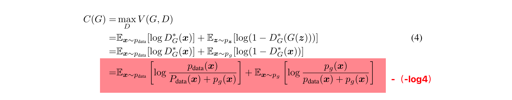
得到：
\(\mathbb{E}_{\boldsymbol{x}\sim p_\mathrm{data}}\left[\log\frac{p_\mathrm{data}(\boldsymbol{x})}{P_\mathrm{data}(\boldsymbol{x})+p_g(\boldsymbol{x})}\right]+\mathbb{E}_{\boldsymbol{x}\sim p_g}\left[\log\frac{p_g(\boldsymbol{x})}{p_\mathrm{data}(\boldsymbol{x})+p_g(\boldsymbol{x})}\right] + log4\)
= \(\mathbb{E}_{\boldsymbol{x}\sim p_\mathrm{data}}\left[\log\frac{p_\mathrm{data}(\boldsymbol{x})}{P_\mathrm{data}(\boldsymbol{x})+p_g(\boldsymbol{x})}\right]+\mathbb{E}_{\boldsymbol{x}\sim p_g}\left[\log\frac{p_g(\boldsymbol{x})}{p_\mathrm{data}(\boldsymbol{x})+p_g(\boldsymbol{x})}\right] + log2 + log2\)
= \(\mathbb{E}_{\boldsymbol{x}\sim p_\mathrm{data}}\left[\log\frac{2 p_\mathrm{data}(\boldsymbol{x})}{P_\mathrm{data}(\boldsymbol{x})+p_g(\boldsymbol{x})}\right]+\mathbb{E}_{\boldsymbol{x}\sim p_g}\left[\log\frac{2 p_g(\boldsymbol{x})}{p_\mathrm{data}(\boldsymbol{x})+p_g(\boldsymbol{x})}\right]\)
= \(\mathbb{E}_{\boldsymbol{x}\sim p_\mathrm{data}}\left[\log\frac{ p_\mathrm{data}(\boldsymbol{x})}{\frac{P_\mathrm{data}(\boldsymbol{x})+p_g(\boldsymbol{x})}{2}}\right]+\mathbb{E}_{\boldsymbol{x}\sim p_g}\left[\log\frac{p_g(\boldsymbol{x})}{\frac{p_\mathrm{data}(\boldsymbol{x})+p_g(\boldsymbol{x})}{2}}\right]\)
借助 KL散度 公式：

分布P和分布Q的KL散度公式 就是 \(log(\frac{P(x)}{Q(x)})\) 关于P(x) 的期望
\(= KL(p_{data}(x) || \frac{p_{data}(x)+p_g(x)}{2}) + KL(p_{g}(x) || \frac{p_{data}(x)+p_g(x)}{2})\)
关于公式（5）的得到，是为了C(G)，我们最开始\(-(-log4)，\)为了保证公式总体不变，所以最后在 \(+(-log4)\) ：
得到完整的 公式(5)

- 以上 公式(5)的证明，看懂了
解读公式5，首先 \(KL散步大于0\)，恒成立，所以我们看出化简出来的式子，最小值是 \(-log4\)
最小值何时取到，就是\(KL散度=0\) 也就是
① \(p_{data}(x) = \frac{p_{data}(x)+p_g(x)}{2}\)
② \(p_{g}(x) = \frac{p_{data}(x)+p_g(x)}{2}\)
同时成立，不就是 \(p_{data}=p_{g}\)
我们 用詹森-香农散度，继续化简，得到公式6

JSD(P||Q)=\(二分之一的分布M和分布P的KL散度+\)\(二分之一的分布M与分布Q的KL散度\)
其中\(M=二分之一的分布P加分布Q\)
基于 詹森香农散度的公式，把公式(5)化简成 公式(6)

同理，\(JSD\)也是一个 大于等于0 的一个值，并且仅在 \(p_{data}=p_g\)时取0
- 以上 公式(6)的证明，懂了
以上说明，\(p_{data}=p_g\)，也就是生成器生成的分布，刚好等于 真实数据的分布时，我们 C(G) 会取最小值 \(-log4\)，也就是 \(G\)的优化达到了最优
本文实验手写数字识别，通过GAN网络，手写照片的分布，随机生成高斯变量送入到生成器中，生成器生成一张手写数字的照片，是一种无监督的学习方法
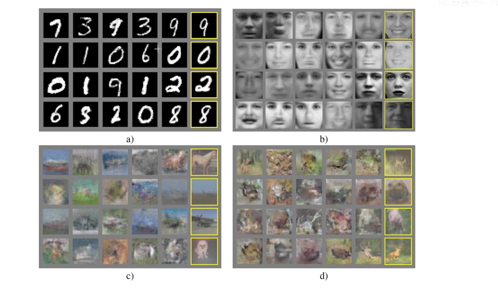
代码实现¶
全部代码：
1 2 3 4 5 6 7 8 9 10 11 12 13 14 15 16 17 18 19 20 21 22 23 24 25 26 27 28 29 30 31 32 33 34 35 36 37 38 39 40 41 42 43 44 45 46 47 48 49 50 51 52 53 54 55 56 57 58 59 60 61 62 63 64 65 66 67 68 69 70 71 72 73 74 75 76 77 78 79 80 81 82 83 84 85 86 87 88 89 90 91 92 93 94 95 96 97 98 99 100 101 102 103 104 105 106 107 108 109 110 111 112 113 114 115 116 117 118 119 120 121 122 123 124 125 126 127 128 129 130 131 132 133 134 135 136 137 138 139 140 141 142 | |
上面的代码可以直接运行 \(\uparrow\)
下面是讲解，有些许出入，但整体思想是一致的 \(\downarrow\)
查看输出结果，可以看到生成的图片逐渐清晰：
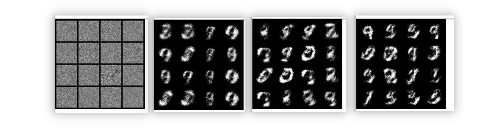
首先代码的大框架，首先生成生成器的类，然后生成判别器的类，然后进行训练：
1 2 3 4 5 6 7 8 9 10 | |
我们举例子，以生成手写数字照片为例：
首先 怎么导入 minist数据集，谷歌搜索： torch vision mnist 第二个，MNIST
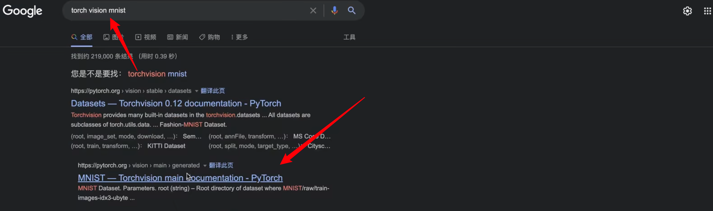
看到官方api：
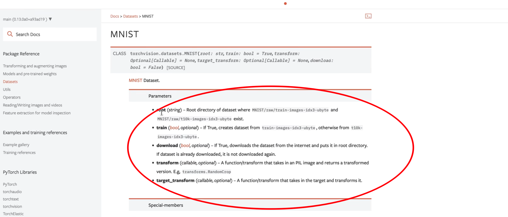
首先需要的参数：
- root：数据存储路径
- train：是否train模式
- dowload：是否下载
- transform：PIL image格式的转换成 浮点型的
通过这样的class 得到MINST数据集
首先，查看minist数据集长什么样：
1 2 3 | |
把下载的minist数据集存到
minist_data文件夹下，采用训练模式，本地没有所以设置为True
一共有6000个样本
看一下每个样本长什么样（打印前5个）：
1 2 3 4 5 6 7 8 9 | |
前5个每一个都是image的对象，大小是28×28的，前面是 \(x\) 后面是 标签，数据格式是 PIL image
如果我们打印shape的话，会报错
1 2 3 4 5 | |
这时，需要调用transform

可以看到例子：

使用transforms.Compose()传入
我们只需要调整一下大小，传入28


接着，把PIL image格式转化成 浮点数 格式
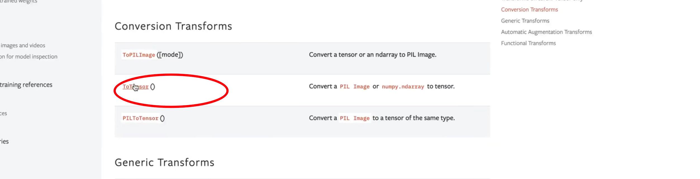
ToTensor API

将PIL image格式 或者 numpy 数组 转换成tensor格式，并且可以转化到 0~1之间的浮点数
再次打印 shape：
1 2 3 4 5 6 7 8 9 10 11 12 13 14 15 | |
每个样本 都是 1×28×28；1表示通道数，minist通道数=1；以上看到了样本长什么样，可以帮助Generator生成照片
接下来，继续看Generator函数，先写init，再写forward，init定义模块，forward将init的模块串联起来，生成照片
1 2 3 4 5 | |
实例化父类，继承自nn.Module，继承父类的构造方法
1 | |
forward接收z，高斯随机变量，z的shape=batchsize×1×28×28,1是channel、H、W=28、28
1 2 | |
init函数，使用nn.Sequential()，定义网络层，定义第一个线性层nn.Linear(in_dim,64)，64是随便定义的，in_dim是给的，线性层后面接着激活层nn.ReLU()，查看官网api，默认inplace=False，我们改成True，然后重复几遍，线性层、激活层...
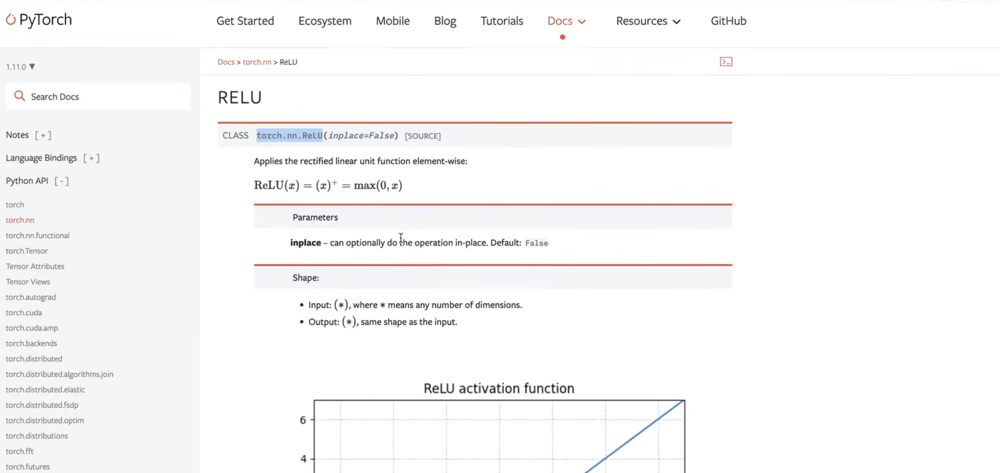
1 2 3 4 5 6 7 8 9 10 11 12 13 14 15 16 17 18 19 | |
先不断的升维升维升维，最后降维 1024→ torch.prod(image_size)，最后使用激活函数Tanh，将元素变成-1到1

torch.prod 返回输入张量 元素的连乘积
然后看forward函数，将z传入到init定义的self.model()
1 2 3 | |
将输出的output转换为图片格式，调用reshape，第一个维度仍然用，z.shpe[0]，后面的维度就用image_size，image_size加星号，就能把列表传进去
1 2 3 4 5 | |
将image返回，以上实现了一个简单的生成器。
1 2 3 4 5 6 7 8 9 10 11 12 13 14 15 16 17 18 19 20 21 22 23 | |
接下来实现判别器
判别器接收的是一张图片作为输入，生成器接收的是随机噪声作为输入
1 2 3 4 5 6 7 8 9 10 11 12 13 14 15 16 17 18 | |
判别器的init同样写一个model，判别器的nn.Linear的维度可以反过来写，上面是一步步的增大维度，对于判别器而言，一开始可以是大维度，然后慢慢的降维度，最后输出预测的标量，最后将128映射到1，最后输出概率，就不是Tanh，而是Sigmoid
判别器接收一张照片作为输入，输出是Sigmoid函数 输出的概率值
forward函数 接收的image格式 batchsize×1×28×28，对image进行reshape，reshape的第一维是image.shape[0]，CHW统一放到最后一维
1 | |
以上得到了概率prob，最后返回即可，以上实现了判别器（in_dim 那里有错误）
1 2 3 4 5 6 7 8 9 10 11 12 13 14 15 16 17 18 19 | |
判别器以图片作为输入，输出概率
接下来进行训练部分，第一部分，构造数据集，dataset已经写好了，接下来送入到dataloader中，忘记用法就查api
看接收的输入

- dataset
- batch_size
- shuffle
dataloader的作用就是把dataset的数据变成一个个batch，后面进行批训练
1 2 | |
接下来开始优化器，需要两个优化器，对生成器的参数进行优化和对判别器的参数进行优化

生成器的优化器Adam，查看Adam需要的参数：

- params：第一个是可迭代的训练参数，就是把模型的parameters调用一下就可以了，得到可迭代的训练参数
1 | |
因此 我们需要实例化Generator,传入params
第一个线性层修改一下，少传个参数：
1 2 3 4 5 | |
接下来实例化一个Generator
1 | |
然后，Adam优化器的参数，就是generator.parameters()，只对生成器的参数进行优化
1 | |
同样实例化 判别器，同时优化判别器的参数
1 2 3 4 5 | |
生成器参数 和 判别器参数 完全隔离，优化也分别优化
接下来 定义loss_fn，逻辑回归，判断照片来自真实的 还是 假的，loss function 是BCELOSS 二次的交叉熵
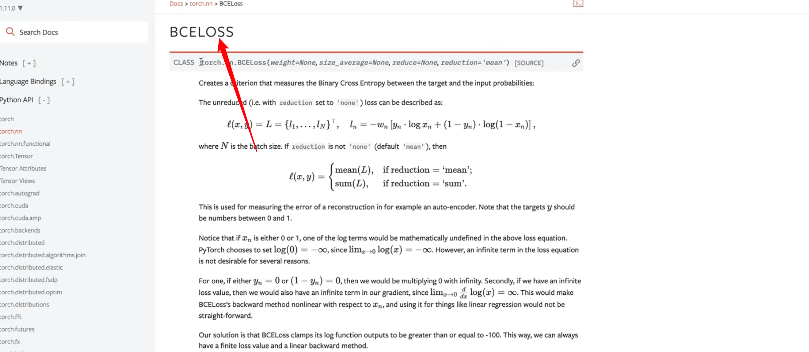
BCE接收的参数：

- input可以是任意的维度
- output也是任意的维度，output默认情况是一个标量，如果把reduction设置为"none"的话，形状就会和输入一样
- target也是任意的维度
- 下面给出例子
实例化一个loss function
input是一个长度为3的向量
target也是一个长度为3的向量
然后跟一个loss计算 得到一个标量
调用是很简单的，就调用一个nn.BCELoss()即可
- BCELoss的公式

值得注意的是，这里 \(x_n=1\) 或者 \(x_n=0\) \(log\) 不会崩溃，因为pytorch内部保证了数值稳定性
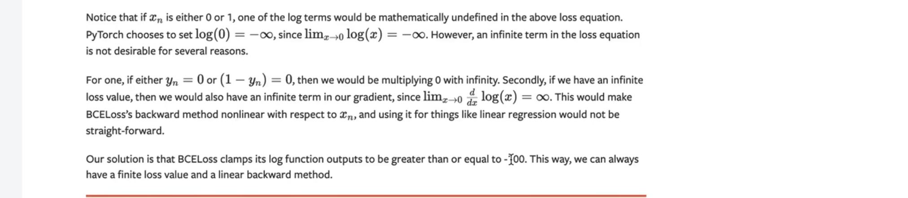
最后一段，对loss function进行了截断，截断到-100为止，避免了负无穷大 崩溃的问题
1 | |
以上完成了所有定义的部分：
1 2 3 4 5 6 7 8 9 10 11 12 13 14 15 16 17 18 19 | |
接下来 开始训练 就是论文中所描述的 两个 for循环
第一个for循环 对 epoch进行循环，表示训练多少个周期
1 2 | |
第二个for循环 对dataloader进行一个枚举的遍历，采用enmerate(dataloader)，返回两个，第一个是index，第二个位置上是sample 或者说 mini_batch，mini_batch 不仅包含 \(x\) 还包含 \(y\)，因此 我们要对mini_batch 进行解析一下
1 2 | |
labels不要了 ，因为这里进行的是无监督的生成任务，这里的image就是真实的图片，所以命名gt_image，ground truth，表示真实的照片
接下来，首先随机生成一个z，z服从正态分布，形状是 \(batch\_size×latent\_dim\)，
1 2 3 4 5 6 | |
关于latent_dim？
z的维度是batch size×latent dim
z的维度在最开始的定义中，写成的是：
就是假设 跟 图片一样的维度，但是，也可以假设是 latent_dim，一般在生成模型中，都是latent dim包括在VAE中，都是latent dim
z是 生成器的输入
就是说z的维度，可以是任意的
因此 我们需要 定义一个latent_dim
将latent_dim 设置为64，此时z的大小是 batch size×latent dim


然后把 \(z\) 喂入到generator之中，得到prod_image，预测出来的照片
1 | |
得到预测的照片，维度是4维的

batch size×通道×高度×宽度，跟Discriminator的输入是一样的

所以 可以把得到的预测照片 送入到 discriminator之中，得到判别的概率

就是原文中的D(G(z))
1 | |
接下来 把 生成器 生成的照片 送入到 判别器之中，得到一个概率，然后把目标也送入进去，送入到BCELoss function之中，就可以得到g_loss
1 | |
接下来，反向传播，更新参数
1 2 | |
最开始的时候，需要把 梯度置 0
1 2 3 4 | |
但是 target还没有定义，写成1还是 写成0？目标是对生成器进行优化，所以希望 判别器把 生成器生成的图片 优化成真实图片，所以写成预测为1，即定义target = 1，形状就是 batch_size×1
1 | |
以上是对生成器的优化
1 2 3 4 5 6 7 | |
接下来，判别器的优化
- 判别器一开始也需要置零操作
1 | |
- 判别器的目标函数有两个：
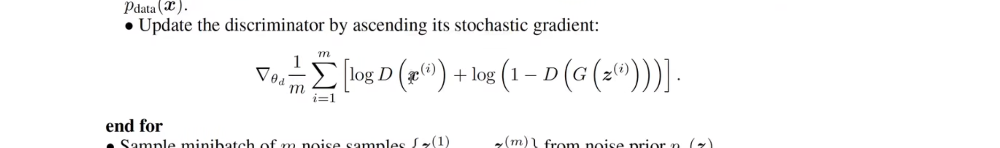
第一项是需要把真实的目标图片送入进去
1 2 | |
优化第一项的目标是判别器能够把真实图片预测正确，标签是target=1
以上写好了第一项，第二项把 pred_images送入进去，不过要把target的torch.ones改成torch.zeros，因为第二项的优化目标是 判别器把预测照片分类成0：
1 2 | |
这里有需要注意的点，在更新判别器的时候，不要更新生成器的参数，所以用 detach把参数隔离出来，从计算图中分离出来，而不需要计算梯度，由于是两个loss
接下来同样进行 backward和step
1 2 | |
以上是g和d的优化
考虑保存中间结果，比如 每次处理完1000张照片（一共6w张照片），保存照片的结果
1 2 | |
官方api ：torchvision 保存照片

save_image函数：
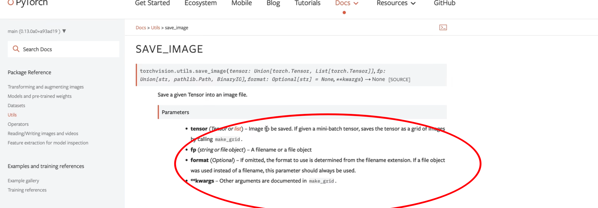
接收参数：
- tensor：接受一个tensor，tensor就是我们保留的照片，如果给定minibatchbatch的话，也是可以的，会用网格状保存
- fp：文件名称
- format：确定文件的后缀
接下来调用这个函数，保存照片
第一个参数：传入pred_images，是4维的、minibatch的格式
1 2 | |
第二个参数：文件名称
文件名称需要遍历命名每个单独的pred_image，采用enumerate遍历，遍历得到的第一个参数是index，第二个参数是照片
1 2 3 | |
补充之前的 transform还需要一个 normalize参数


是因为在识别时，需要计算均值和方差
这里有一个trick，计算是0.3，0.3，但实际使用时用的是0.5，0.5，而且在实际的实验中，确实是0.5的实验效果更好
1 2 3 4 5 6 7 8 9 | |
以上实现了GAN的整体框架
- 先写一个生成器
- 然后写判别器
- 构建数据
- 实例化两个optimizer，分别是生成器的优化器，然后是判别器的优化器
- loss function
- 训练过程中 ，先训练生成器或者先训练判别器都是可以的
- 需要注意的是，不论是生成器还是判别器优化器，都需要指定好参数
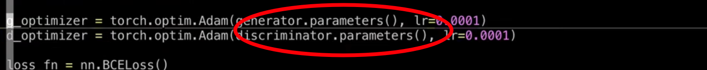
生成器优化器只优化生成器的参数、判别器优化器只优化判别器的参数
1 2 3 4 5 6 7 8 9 10 11 12 13 14 15 16 17 18 19 20 21 | |
代码对应算法流程：

首先生成器接收高斯随机噪声作为输入
1 | |
生成器接收预测的照片作为优化
1 2 3 4 5 | |
优化的目的是使得生成的照片接近真实照片，也就是判别器的输出 discriminator(pred_images) 接近真实标签1 torch.ones(batch_size,1)
判别器的优化包括两部分，将真实图像判别为1，将生成图像判别为0，两个损失相加，保证损失的平衡，所以*0.5
1 2 3 4 | |
可以将这个损失拆开：real_loss 表示真实照片的损失；fake_loss 表示生成图像的损失；接着 \(0.5倍的\mathrm{real\_loss}\) + \(0.5倍的 \mathrm{fake\_loss}\) 得到最终的loss
1 2 3 4 | |
拆开写的目的是通过观察损失 判别 判别器的训练是否趋于稳定，标准是 观察real_loss 和 fake_loss，同时下降达到最小值，并且值差不多大，说明 D 已经稳定了
后面代码的优化：
（1）引入batchnorm可以提高收敛速度，具体做法是在生成器的Linear层后面添加BatchNorm1d，最后一层除外，判别器不要加
（2）直接预测【0,1】之间的像素值即可，不做归一化的transform；或者也可以放大，预测【-1,1】之间，用mean=0.5 std=0.5进行归一化transform都可以
（3）将激活函数ReLU换成GELU效果更好
（4）real_loss基于真实图片，fake_loss基于生成图片，real_loss = loss_fn(discriminator(gt_images), torch.ones(batch_size, 1))，fake_loss = loss_fn(discriminator(pred_images.detach()), torch.zeros(batch_size, 1))
（5）适当引入重构loss，计算像素值的L1误差
（6）建议引入loss打印语句，如：
1 | |
（7）判别器模型容量不宜过大
（8）save_image中的normalize设置成True，目的是将像素值min-max自动归一到【0,1】范围内，如果已经预测了【0,1】之间，则可以不用设置True
（9）判别器的学习率不能太小
（10）Adam的一阶平滑系数和二阶平滑系数 betas 适当调小一点，可以帮助学习，设置一定比例的weight decay